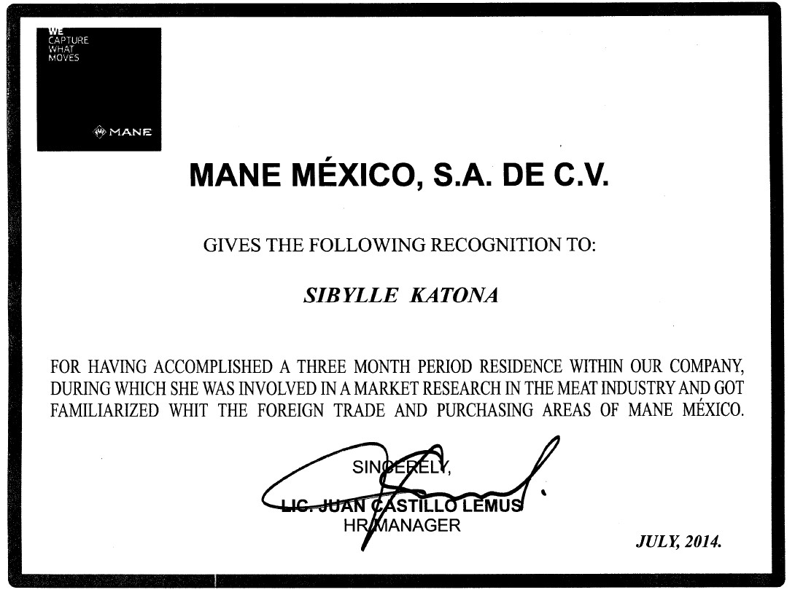

Métro, Boulot, Dodo
Accueil
Qui n'a jamais fait la dure et terrible expérience de vouloir rester chez soi après une semaine bien difficile alors que le DST du samedi matin nous appelle? Cela vous dit quelque chose, n'est ce pas? Sacré souvenirs que ceux du lycée...
Baccalauréat / Lycée Blanche de Castille / 2013
En 2013, j'obtiens un Baccalauréat Scientifique avec la mention Bien.
Au cours de mes années passées au collège et au lycée, j'ai eu plusieurs fois l'occasion de voyager. Ces excursions m'ont permis de me diriger vers ma formation post-bac: un BTS en Commerce International. En effet, le goût des voyages m'a rapidement atteinte et a développé en moi l'envie et le besoin de travailler, plus tard, dans un contexte global.


On m'a toujours dit: "Profites de tes années lycée, elles vont passer en un éclair!" Je vous le confirme cette période est passée telement vite qu'il était déjà temps pour moi de me diriger vers un cursus alliant à la fois la pratique et la théorie. Cette formation m'a beaucoup apportée et a été motivée par mon envie de découvrir le monde.
BTS en Commerce International / Aurlom Paris / 2012 to 2015
Au cours de mon BTS en Commerce international, j’ai pu réaliser un stage de 3 mois au Mexique au sein des services marketing, achat et vente d’une multinationale Française d’agroalimentaire.
Durant ce stage au Mexique j’ai été amenée à prospecter le marché latino-américain et canadien avant de prendre part à la logistique au sein de l’entreprise tant à l’importation qu’à l’exportation. Ces expériences internationales ('voyages et stage') furent enrichissantes en tout point et plus particulièrement au niveau culturel et professionnel. Elles ont renforcé mon autonomie, ma rigueur, ma maitrise des langues, mon ouverture sur le monde et mon envie de continuer à développer mes compétences, notamment dans le domaine des nouvelles technologies et de l’entrepreneuriat.
Licence de Sciences de gestion en Apprentissage / Dauphine Paris / 2015 to 2016
A la suite de mon BTS en Commerce International, j'ai eu l'opportunité d'intégrer l'université Paris Dauphine pour parfaire mon cursus universitaire dans le domaine de la gestion. Je suis actuellement en apprentissage au sein de SFR Business en tant qu'assistante chef de marché - pôle Terminaux. Je suis en charge d'opérations de trade marketing, de benchmarking et de mise à disposition d'informations et de kits de vente pour les distributeurs, les commerciaux et les grossistes.